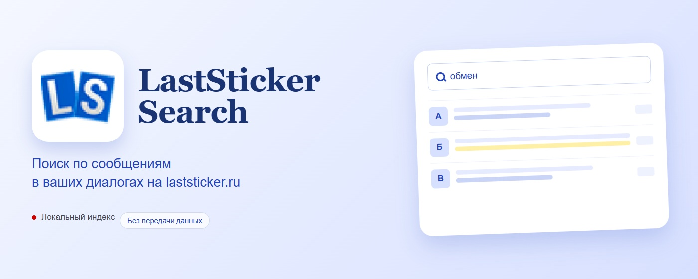
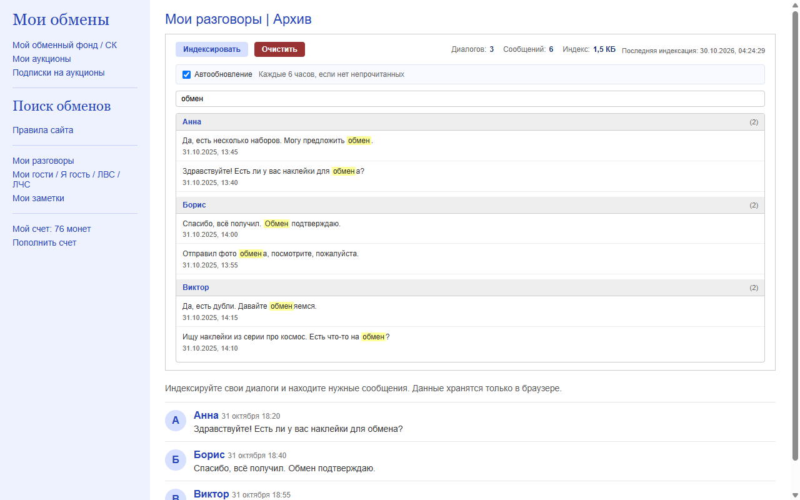

Поиск по всем диалогам
Ищите по тексту сообщений и именам собеседников в основной и архивной переписке.

Chrome extension · Manifest V3
LastSticker Search индексирует ваши собственные диалоги на laststicker.ru и помогает находить нужные сообщения за секунды. Индекс хранится локально в браузере и никуда не отправляется.
Ищите по тексту сообщений и именам собеседников в основной и архивной переписке.
Результат открывает нужную страницу диалога и подсвечивает найденное сообщение.
Неизменившиеся диалоги пропускаются, поэтому повторная индексация проходит быстрее.
Видно, сколько диалогов обработано; длинную индексацию можно остановить.
Сообщения хранятся в chrome.storage.local. Без аналитики, рекламы и внешних серверов.
На странице отдельного разговора панель ищет только по нему и показывает количество сообщений.
Стрелки выбирают результат, Enter открывает его, а / фокусирует поиск.
Видно размер индекса и дату обновления; панель предупредит об устаревании и ошибках загрузки.
Включено по умолчанию: раз в 6 часов обновляет полный индекс. Пропускается, если есть непрочитанные сообщения или браузер закрыт.
Встроенная панель появляется прямо на странице диалогов. Никаких отдельных окон и переключений между вкладками.

После публикации расширение можно будет установить из магазина, и Chrome будет обновлять его автоматически.
Скачайте архив, распакуйте его и загрузите папку через chrome://extensions → «Загрузить распакованное расширение».
Для работы нужен вход в ваш аккаунт на laststicker.ru. Расширение не связано с администрацией сайта. При индексации сайт может отметить открытые диалоги прочитанными.